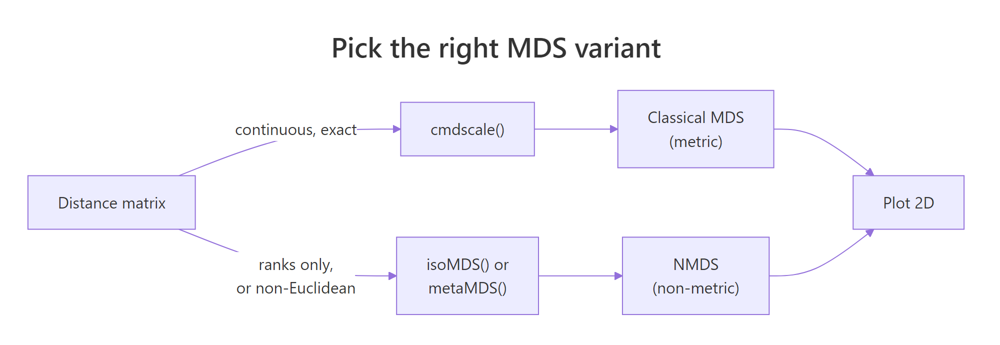
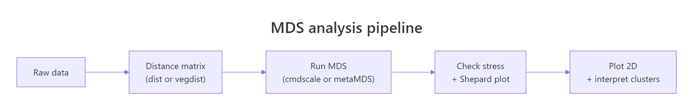

Multidimensional Scaling (MDS) in R: cmdscale() & NMDS with vegan
Multidimensional scaling (MDS) takes a table of distances between objects and lays them out in 2D so that close points stay close and far points stay far. In R, base cmdscale() handles exact (metric) distances, and vegan::metaMDS() handles ranks (non-metric) for ecology, surveys, and any non-Euclidean similarity.
What does multidimensional scaling project to 2D?
You have distances, similarities, or a feature table you cannot picture. MDS turns that mess into a 2D scatter plot where geometric distance on the page approximates the dissimilarities you fed in. The classical version, called principal coordinates analysis when applied to a distance matrix, falls out of one call to cmdscale(). The fastest way to see what it does is the built-in eurodist matrix of road distances between 21 European cities.
Read what just happened. We never told cmdscale() about latitude or longitude. We only handed it a table of road distances. The function arranged the cities so geometric distance between any two points on the plot tracks the road distance you would drive between them. Stockholm sits up north on the plot because every distance to Stockholm is large; Madrid sits at one extreme of axis 1 because Madrid is far from everything in central Europe. The signs of the axes are arbitrary, so the result may appear east-west flipped from a real map. That is fine; only relative positions carry meaning.
Try it: Build a "map of cars" using mtcars. Convert correlations between cars into a distance with as.dist(1 - cor(t(scale(mtcars)))), then run cmdscale() and plot the layout.
Click to reveal solution
Explanation: cor(t(scale(mtcars))) turns each car into a point in feature space, then asks how each pair correlates across mpg, hp, and so on. Subtracting from 1 turns "high correlation" into "small distance". Similar cars cluster tightly.
How do you run classical MDS with cmdscale()?
Now that you have seen what classical MDS produces, look at how it gets there. cmdscale() doubles, centers, and eigendecomposes the distance matrix. The first k eigenvectors give you the coordinates; the matching eigenvalues tell you how much of the dissimilarity each axis recovers. Reading those eigenvalues is how you decide whether 2D was enough.
Use eig = TRUE to get the diagnostics back along with the coordinates. We will scale the four columns of USArrests first so no single variable dominates the Euclidean distance.
The first two eigenvalues swallow most of the variation, and the GOF field reports 0.885, meaning the 2D layout preserves about 88% of the squared input distances. That is solid. If GOF had come back below 0.6, you would either accept that 2D loses real structure or bump k to 3. The eigenvalues drop fast after the second one, so adding a third axis would buy little.
Use the matrix arr_mds$points directly when you want to colour, label, or feed coordinates into another model.
scale(), a variable measured in thousands (like Assault) drowns out one measured in single digits (like Murder). Scaling makes each variable contribute equally to the distance, which is almost always what you want for MDS.Try it: Find the three states most extreme along axis 2 of the USArrests MDS, in either direction.
Click to reveal solution
Explanation: order(-abs(...)) sorts by absolute value descending. Axis 2 separates rural-urban patterns in this data; the extremes flag states with unusual urban-population profiles relative to violent-crime rates.
When should you switch from classical to non-metric MDS?
Classical MDS treats your distances as exact numbers. Halve a distance and the layout shifts accordingly. Non-metric MDS, called NMDS, treats your distances as a ranking only. It cares which pair is closest and which is farthest, not by how much. That distinction matters when distances are ordinal (Likert-scale similarities), come from a non-Euclidean metric like Bray-Curtis, or you suspect the absolute numbers are noisy but the ordering is reliable.

Figure 1: Pick metric (cmdscale) when distances are exact and Euclidean; pick non-metric (isoMDS or metaMDS) when only ranks matter or distances come from non-Euclidean metrics like Bray-Curtis.
The base R route to NMDS is MASS::isoMDS(), which implements Kruskal's algorithm. It iteratively rearranges points until the rank order of fitted distances best matches the rank order of input distances. Compare the layout against the classical run from the previous section.
isoMDS() returns coordinates plus a single stress value. Stress is reported as a percentage here (5.6 means 5.6%, well below the "usable" cutoff you will see in the next section). The point arrangement looks similar to the classical version but is not identical: Alaska and Mississippi swap relative positions because NMDS only honoured rank order, not absolute magnitudes.
library(MASS) to bring it onto the search path. Use MASS::isoMDS() if you would rather not load the whole package.Try it: Refit isoMDS() with k = 3. Read off the new stress and decide whether the third axis was worth adding.
Click to reveal solution
Explanation: Stress falls from about 5.6 to 1.8 when you add a third axis. That is a big drop, suggesting a third dimension carries real signal. In production you would weigh that gain against the loss of a 2D plot and the risk of overfitting noise.
How do you fit NMDS with vegan::metaMDS()?
MASS::isoMDS() is fine for textbook problems. For real ecology, survey, or community data, the standard tool is vegan::metaMDS(). It runs many random starts, picks the lowest-stress solution, applies a square-root transform when abundances are skewed, and rotates the axes so the first axis spans the longest direction. All of that happens behind one call. The default distance is Bray-Curtis, which is the right answer for community abundance counts.
The dune dataset that ships with vegan is a 20-by-30 matrix of plant cover scores at 20 Dutch dune meadows. Fit NMDS on it directly.
Read the printout top-down. Stress is 0.118, comfortably under the 0.20 "unreliable" line, so the 2D ordination is trustworthy. The line "Best solution was repeated 4 times" means metaMDS found the same near-optimal arrangement four times across its random starts. That is confirmation the result is stable and not a local minimum. metaMDS also automatically applied wisconsin(sqrt(...)) standardisation, which dampens the influence of dominant species.
Now plot the ordination. metaMDS supplies coordinates for both sites (rows) and species (columns), so you can show which species drive which patches of the plot.
Sites near each other share community composition. Species names sit at the centroid of the sites where they are abundant. A species at the far left of axis 1, surrounded by sites also far left, is the species defining that gradient end. That is the entire point of an ordination plot: read it as a community-by-community map.
set.seed() before calling it, and check the "Best solution was repeated" line. If the best solution was repeated only once in 100 tries, the algorithm is unstable on your data. Bump trymax higher or rethink the distance metric.Try it: Refit metaMDS using Jaccard distance on presence/absence (binary) data. Compare its stress to the Bray-Curtis run.
Click to reveal solution
Explanation: Jaccard on binary data discards abundance information, so it usually fits a touch worse than Bray-Curtis on count data. If Jaccard fits better, the abundance signal is noisy and presence/absence carries the real structure.
How do you read stress and Shepard plots to judge MDS fit?
Stress is the single number that tells you whether your MDS is worth interpreting. It measures how badly the rank order of fitted 2D distances disagrees with the rank order of input distances. Lower is better. The standard formula:
$$\text{stress} = \sqrt{\frac{\sum_{i Where: Use this rule-of-thumb table from Kruskal: A Shepard plot pairs every input distance with its fitted layout distance. If MDS fit perfectly, those points would lie on a straight line. Run Read the plot two ways. First, the points should hug the step line; wide vertical scatter at any given x-value means MDS could not honour those rank orders. Second, the printout shows two correlations: a non-metric fit (R² of the monotone fit) and a linear fit. For dune you should see non-metric R² around 0.99 and linear R² around 0.95, both excellent. Try it: Add Gaussian noise to a copy of Explanation: Adding random Poisson noise blurs site-to-site distinctions, raising stress from about 0.12 to 0.16. Stress is a sensitive monitor of community-level signal-to-noise in your data. The distance metric is the most important choice in any MDS workflow. The algorithm only visualises whatever you feed it. Pick the wrong metric, and even a stress of 0.05 means nothing. Compare three of these on the dune community matrix and see how the choice changes stress. Bray-Curtis wins on this community data. Jaccard is close because dune's presence patterns track abundance patterns. Euclidean is worst because it treats a column with cover score 9 as nine times more important than a column with cover score 1, which inflates the distances driven by a few common species and hides the rare-species turnover that defines community structure. Try it: Build a small mixed-type frame, compute Gower distance, and run classical MDS on it. Explanation: Take the built-in Explanation: Aggregating to monthly profiles before MDS turns 153 daily readings into 5 interpretable points. Scaling matters because Solar radiation and Ozone live on very different numeric scales. The Explanation: Bray-Curtis fits better because varespec abundances vary by orders of magnitude across species. Throwing away that gradient by binarising costs you fit. Choose Bray-Curtis here. Run both Explanation: A Procrustes correlation of 0.997 says the two layouts are nearly identical after rotation and scaling. For cleanly Euclidean data like iris, metric and non-metric MDS produce the same answer. The metric vs non-metric debate only matters when the distance is non-Euclidean or the rank-only assumption changes the geometry. Here is a full NMDS pipeline on the dune community data, the same workflow you would run in a real ecology paper. The Now you have a fully interpretable plot. Sites cluster by management practice, and the 
Stress
Interpretation
< 0.05
Excellent fit, layout is essentially exact
0.05 – 0.10
Good fit, safe to interpret all clusters
0.10 – 0.20
Usable, but interpret only the broad pattern
> 0.20
Unreliable, the 2D layout is misleading
stressplot() on a metaMDS result to see it.k or use a different method.dune, refit metaMDS, and watch the stress climb.Click to reveal solution
How do you choose the right distance metric for MDS?
Metric
Best for
R function
Euclidean
Continuous variables on comparable scales (after
scale())dist(x)
Manhattan
Robust to outliers; absolute differences
dist(x, method = "manhattan")
Bray-Curtis
Community/abundance counts (ecology default)
vegan::vegdist(x, "bray")
Jaccard
Presence/absence binary data
vegan::vegdist(x, "jaccard", binary = TRUE)
Gower
Mixed numeric + categorical + ordinal columns
cluster::daisy(x, metric = "gower")Click to reveal solution
daisy() from cluster computes Gower distance, which standardises each column to [0, 1] and combines numeric, factor, and ordinal contributions. cmdscale() then handles the resulting distance like any other.Practice Exercises
Exercise 1: MDS of the airquality monthly profiles
airquality data and build an MDS that places each month as a single point. Aggregate to monthly means (drop NAs first), scale the columns, compute Euclidean distance, run cmdscale(), and plot months coloured by season. Save the result to my_mds.Click to reveal solution
Exercise 2: Bray-Curtis vs Jaccard on lichen communities
varespec dataset in vegan records cover values for 44 lichen species across 24 sites. Fit two NMDS ordinations: one with Bray-Curtis (counts), one with Jaccard binary (presence/absence). Save them as vare_bray and vare_jac. Print both stress values and decide which metric better fits this data.Click to reveal solution
Exercise 3: Procrustes correlation between cmdscale and isoMDS
cmdscale() and MASS::isoMDS() on a scaled-Euclidean distance from iris[, 1:4]. Save the layouts as iris_cmd and iris_iso. Use vegan::procrustes() to compute the correlation between the two layouts and print it. Decide whether the choice of metric vs non-metric mattered for this dataset.Click to reveal solution
Complete Example
dune.env companion table records management type for each site, so we can colour the ordination by environmental gradient.envfit() overlay tells you that soil moisture explains 61% of the layout variance and is highly significant. Soil A1 horizon thickness explains 42% and is also significant. The arrows on the plot point in the direction of increasing values for each environmental variable. That is a publication-grade community ecology figure in fewer than 15 lines of code.envfit() and ordisurf() are the standard tools for that overlay step.Summary
Figure 2: The five-step MDS pipeline: data, distance, MDS fit, fit diagnostics, plot.
| Question | Answer |
|---|---|
| What does MDS do? | Projects pairwise distances into 2D so geometric distance approximates dissimilarity. |
| When metric? | Distances are exact and Euclidean-compatible: cmdscale(). |
| When non-metric? | Distances are ranks, Bray-Curtis, Jaccard, or mixed types: vegan::metaMDS(). |
| Most important choice? | The distance metric, not the MDS algorithm. |
| How to judge fit? | Stress (< 0.20 usable) and a Shepard plot via stressplot(). |
| Common trap? | Reading axes as if they had inherent meaning. They do not. |
References
- Cox, T.F. and Cox, M.A.A. Multidimensional Scaling, 2nd Edition. Chapman & Hall/CRC (2001).
- Borg, I. and Groenen, P.J.F. Modern Multidimensional Scaling: Theory and Applications, 2nd Edition. Springer (2005).
- Oksanen, J. et al. vegan: Community Ecology Package documentation. Link
- R Documentation.
cmdscalereference. Link - Venables, W.N. and Ripley, B.D. Modern Applied Statistics with S, 4th Edition. Springer (2002). Chapter 11 covers MDS via
isoMDS(). - Kruskal, J.B. Nonmetric multidimensional scaling: a numerical method. Psychometrika 29 (1964): 115-129.
- Legendre, P. and Legendre, L. Numerical Ecology, 3rd English Edition. Elsevier (2012). The reference text for ecological ordination.
Continue Learning
- t-SNE and UMAP in R: sibling dimensionality-reduction methods designed for very-high-dimensional data and tight local neighbourhoods.
- PCA in R: when your distances are exactly Euclidean and linear, PCA is the faster cousin of classical MDS.
- Cluster Analysis in R: natural pairing for NMDS layouts with k-means or hierarchical grouping.